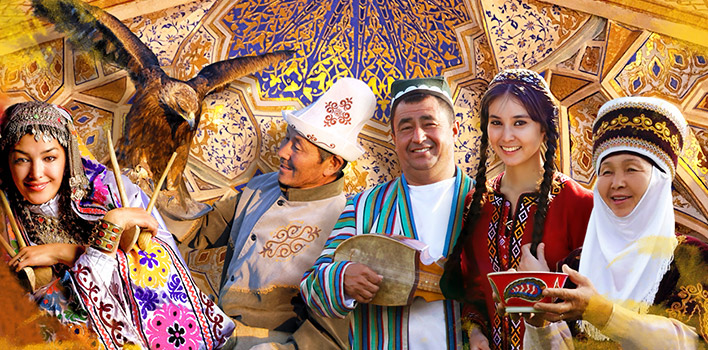
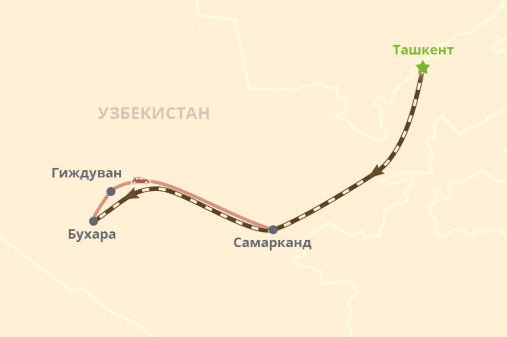

Групповой тур в Узбекистан на Навруз
Групповой тур в Узбекистан на Навруз начнется с экскурсионной программы по Ташкенту. В рамках тура вы также посетите такие древние города, как Бухара и Самарканд.
Навруз (в пер. "Новый день") - один самых древних и любимых праздников в Центральной Азии. Навруз - это праздник прихода весны, отмечаемый 21 марта, в день весеннего равноденствия. Исторически, этот день символизирует начало нового года, перерождение природы, начало посевного сезона. Издревле, жители земледельческих оазисов отмечали этот праздник, устраивая народные гулянья, скачки, петушиные и собачьи бои. В Узбекистане доброй традицией является приготовление национального блюда из проросшей пшеницы - сумаляка. На вкус блюдо напоминает сладкий пшеничный крем. Традиционно праздничный стол (дастархан) должен быть богатым, потому как существует поверье, каков твой стол на праздник, таким он будет и весь следующий год. Мы приглашаем вас провести праздничные дни Навруза с гостеприимным народом Узбекистана и посетить древние города нашей прекрасной страны.
Дни тура
Прибытие в Ташкент. Встреча в аэропорту. Трансфер в гостиницу.
Ранний заезд. Отдых. Завтрак с 07:00 до 10:00. В 14:00 встреча с гидом
в холле гостиницы. Экскурсионная программа с водителем и гидом по
Ташкенту -
столице Узбекистана и крупнейшему из городов Центральной Азии. Вы
посетите Старый город, где расположен религиозный центр Ташкента –
комплекс Хаст-Имам. Именно здесь хранится знаменитый Коран халифа Османа
(VII в.). В Хаст-Имаме вы посетите медресе Барак-хана, мечеть
Тилля-Шейха, мавзолей Абу Бакр Каффаль Шаши и Исламский институт имени
Имама аль-Бухари. Затем вы побываете на одном из старейших базаров
города – "Чорсу". После осмотра достопримечательностей Старого города
вас ждет поездка в центр, где расположены площадь Амира Тимура, площадь
Независимости и Музей прикладного искусства. Свободное время. Ночь в
гостинице.
Продолжительность экскурсии: 4-5 часов
Утром трансфер из гостиницы на вокзал. Поезд отправляется из Ташкента в
Самарканд (время в пути 2 ч. 10 мин/3ч5мин.). Здесь вас встретят гид и
водитель, которые будут сопровождать вас во время экскурсии. Вы
отправитесь на знаменитую площадь Регистан, затем побываете в мечети
Биби-Ханум, на Сиабском базаре, в обсерватории Улугбека. Также вы
посетите ансамбль мавзолеев самаркандской знати Шахи-Зинда и мавзолей
Гур-Эмир - усыпальницу Амира Тимура и Тимуридов. Ночь в гостинице.
Продолжительность экскурсии: 6-7 часов
Продолжение экскурсии по Самарканду. Вы побываете в музее "Афросиаб",
посетите могилу Святого Даниила. Затем вас ждет поездка в деревню
Конигил, где вы сможете наблюдать процесс изготовления самаркандской
бумаги из шелковицы по старинной технологии. После экскурсий - свободное
время. Ночь в гостинице.
Продолжительность экскурсии: 3-4 часа
В 08:50 проводы на вокзал на поезд в Бухару. Прибытие в 11:19. Встреча на
вокзале и трансфер в Старый Город. Полный день экскурсий с гидом по
Старому городу. Посещение комплекса Ляби-Хауз, мечети Магоки-Аттори,
медресе Чор-Минор, торговых куполов, минарета Калян, мечети Калян и
медресе Мири-Араб, медресе Улугбека и медресе Абдулазизхана, крепости
Арк, мечети Боло-Хауз, мавзолея Саманидов и мавзолея Чашма-Аюб. Ночь в
гостинице.
Продолжительность экскурсии: 6-7 часов
Поездка за город, где находится летняя резиденция последнего бухарского
эмира - Ситораи Мохи-Хоса. В архитектуре этого великолепного дворца
причудливо сочетаются элементы восточного и русского декора. Продолжение
экскурсии в мавзолее Бахоуддина Накшбанди - основателя суфийского ордена
Накшбандия и в некрополе Чор-Бакр, где похоронены джуйбарские
шейхи-суфии. Свободное время во второй половине дня. Ночь в
гостинице.
Продолжительность экскурсии: 3-4 часа
В 04:00 проводы в аэропорт на рейс SU 1877 в 06:00.
| Начало | Конец | Цена |
| Янв 2, Вс | Янв 7, Пт | US $ 540 |